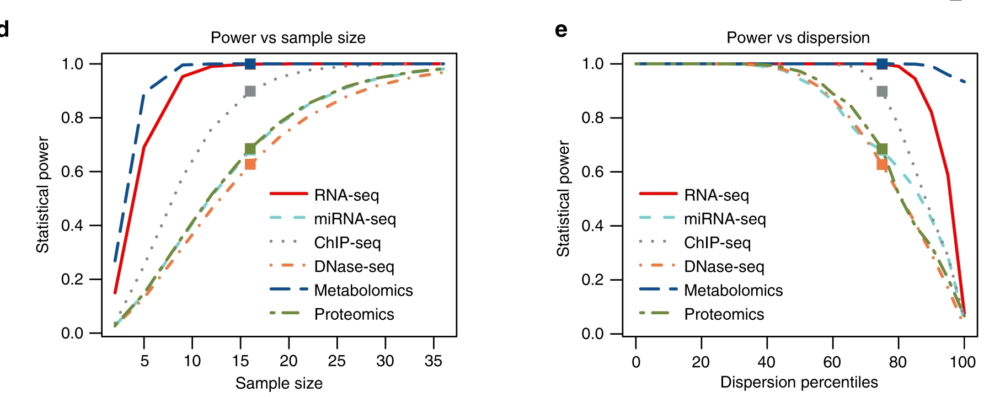

2.2.2 Design decision costs
Learning objectives
- Explain why depth and replication serve different analytical functions and cannot substitute for each other
- Describe why returns on additional depth diminish once the detection floor is met
- Identify how multi-omics designs compound budget constraints
- Apply a decision sequence for allocating a finite budget across depth, replication, and platform scope
Module 2.2.1 established that statistical power requires a sufficient number of independent biological samples. This section addresses a second resource that competes for the same budget: how extensively each sample is measured.
Every omics platform samples only a subset of the molecules in a biological specimen. A sequencing library does not read every DNA or RNA molecule in a cell; it reads a random sample of them. A mass spectrometry run does not detect every protein or metabolite in a sample; it captures only the molecules that enter the instrument during the acquisition window and produce a strong enough signal to be detected. Increasing this sampling depth costs money, and that money comes from the same budget used for biological samples.
Two design choices therefore compete for the same budget: how many biological samples to collect and how deeply each sample is measured. Spending more on each sample means fewer total samples. Collecting more samples means less budget available per sample. A third choice — whether to measure one molecular layer or several — increases the total cost again.
These decisions must be made before data collection begins. They cannot be changed easily after samples have been processed.
Consideration 2: Platform selection
Platform choice determines per-sample cost, throughput capacity, and what can be measured at all. The same question addressed by targeted versus whole-genome sequencing, or DDA versus DIA proteomics, carries a different per-sample price and a different depth requirement. Platform selection and budget planning are not separable decisions.
Consideration 4: Batch effects
How samples are distributed across acquisition runs affects both per-sample cost and batch structure. Grouping samples to fill runs efficiently can reduce cost but risks confounding batch with biology if all samples from one condition end up in the same run. Both pressures must be planned for together before any sample is processed.
Consideration 5: Experimental controls
Controls — extraction blanks, pooled QC samples, spike-ins, shared reference samples — consume instrument time and sample slots. They must be counted and costed before the biological sample number is set. A study that sets its biological sample number first and adds controls afterwards either has fewer biological replicates than planned or an unplanned cost overrun.
What depth means on each platform
Module 1.1 described the five molecular layers and what each measures. The platforms used to measure those layers have different architectures, and the word "depth" describes something specific to each.
| Layer | Platform | What depth means in practice |
|---|---|---|
| Genome | Short-read sequencing (WGS, WES) | The number of times each position in the genome is independently sequenced, called coverage. A position covered 30 times has been read 30 times. A position covered twice may not be sequenced at all in some samples, and variant calls at that position are unreliable. |
| Epigenome | ATAC-seq, ChIP-seq | The number of sequencing reads mapping to each genomic region. Accessible chromatin or antibody-enriched regions must accumulate enough reads to be distinguished from background signal. Antibody efficiency and transposase activity vary between samples; more reads are needed to reach reliable detection when efficiency is lower. |
| Epigenome | Whole-genome bisulfite sequencing (WGBS) | The number of times each cytosine position is sequenced after bisulfite conversion. At low coverage, individual CpG sites are sampled from too few reads for a reliable methylation estimate. |
| Transcriptome | Bulk RNA-seq | The total number of sequencing reads generated per sample. Genes expressed at very low levels are represented by few molecules in the library; whether any reads mapping to those genes are captured depends on how large the total read count is. |
| Transcriptome | Single-cell RNA-seq | Two separate depth parameters: reads per cell, and cells per donor. Reads per cell determine how completely each cell's transcriptome is sampled. Cells per donor determine within-donor resolution. Donors remain the biological replicates; more cells from one donor does not increase statistical power for between-group comparisons. |
| Proteome | LC-MS/MS | The number of distinct peptides sampled during an acquisition. Shaped by: acquisition mode (DDA selects the most abundant detected ions for sequencing; DIA systematically measures all ions across the full mass range); gradient length (longer separation gives more time to sequence peptides before they co-elute and are missed); and fractionation (physically separating the sample into less complex fractions before injection so more proteins can be detected per injection). |
| Metabolome | LC-MS, GC-MS | The number of metabolites detected per sample. Targeted acquisition measures a pre-defined list of metabolites with parameters optimised for each, giving high sensitivity for those features. Untargeted acquisition covers the full detectable mass range with a single set of parameters, giving broader coverage but lower sensitivity for any individual metabolite. |
Each parameter costs money to increase. A genomics experiment at 60× coverage costs roughly twice the per-sample sequencing cost of one at 30×. A proteomics acquisition with a 120-minute gradient costs more instrument time than one at 60 minutes. An untargeted metabolomics experiment fractionated into multiple injections costs proportionally more acquisition time per sample than an unfractionated run.
The detection floor
Every platform has a detection floor: the depth below which a feature of interest is inconsistently sampled or missed entirely across samples. A feature below the detection floor does not appear reliably in the dataset — not because it is absent biologically, but because the measurement did not reach it.
Where the detection floor sits for a given study depends on the features the question requires. The floor is not a fixed property of the platform; it is set by the biology.
-
A genomics study interrogating common germline variants present in every cell can work reliably at 30× coverage for whole-genome sequencing. A study looking for somatic mutations present in only 5% of tumour cells needs much higher coverage at the same positions. At 30×, a variant in 5% of cells appears in approximately 1–2 reads — insufficient to distinguish from sequencing error. Coverage of 200× or higher is needed to call such variants confidently.
-
In bulk RNA-seq, structural genes and metabolic enzymes expressed at high levels in a tissue are reliably captured at moderate read depths. Regulatory non-coding RNAs or transcripts from minor cell subpopulations within the tissue may not appear in any reads at the same depth, even though they are present in the sample.
-
In proteomics, abundant and well-ionising proteins are sampled in most acquisitions under standard conditions. Low-abundance signalling proteins, or proteins that co-elute during separation with far more abundant proteins, may not be sampled at all in a DDA acquisition, regardless of their biological relevance.
-
In untargeted metabolomics, metabolites at high concentrations in the sample generate strong signals readily distinguishable from background noise. Trace metabolites present near the instrument's detection limit may not produce a signal separable from noise in a standard run.
Depth and replication cannot substitute for each other
Measurement depth and biological replication solve different problems. Conflating them leads to over-investment in one dimension and deficiency in the other.
Biological replication (module 2.2.1) addresses the question: given that a feature is being detected, does the difference I observe between groups reflect biology or chance variation between individuals? Each additional independent biological sample (— )a separate patient, animal, or environmental specimen) provides a new observation of the biological effect. Statistical power for detecting a true difference increases with biological sample number as long as the study is underpowered for the comparison of interest.
Measurement depth addresses a prior question: is this feature being detected at all? A feature that is not consistently sampled across samples cannot be analysed reliably. Differential analysis (differential expression, differential methylation, differential protein abundance, differential metabolite concentration) assumes the feature is present in the dataset. If it is absent from some samples because depth was insufficient, those missing values introduce noise that is hard to interpret accurately.
These two problems require different solutions:
-
A somatic variant that is not being called reliably because coverage is too low is a depth problem. Adding more patients, all sequenced at the same low coverage, means the variant remains below the detection floor in every new sample.
-
A protein that is being detected consistently across all samples but shows no statistically significant difference between groups is a power problem. Switching to a longer gradient or DIA acquisition on the same samples will not help, because the protein is already being detected. More independent biological samples are needed.
-
In ATAC-seq, chromatin accessibility peaks that fail quality filters because read depth is insufficient to distinguish signal from background noise are a depth problem. Adding more biological donors does not generate more reads per sample. But once peaks are reliably called, whether accessibility differs between groups is a replication problem.
-
In targeted metabolomics, once all analytes on the panel are consistently detected above the instrument detection limit, whether their concentrations differ between groups requires sufficient biological sample number, not more injections from the same samples.
This distinction holds across all five molecular layers and all platform types.
Returns on depth diminish above the detection floor
Once measurement depth exceeds what is needed to consistently detect the features the question depends on, additional depth yields diminishing analytical returns. Additional coverage, reads, or acquisition time primarily resamples features that are already being measured. The marginal information gained per unit of additional spend decreases rapidly.
Published benchmarking studies have examined this directly:
In bulk RNA-seq, above approximately 20–30 million reads per sample, the proportion of expressed genes detected in a typical mammalian transcriptome does not increase substantially with additional reads. Additional reads improve depth over already-detected genes rather than revealing new ones. For studies targeting highly expressed genes, even lower depths are often sufficient; the exception is studies targeting rare transcripts or non-coding RNAs, where the detection floor is higher.
In whole-genome sequencing for germline variant calling, 30× coverage is an established benchmark because variant calling accuracy for common variants plateaus near this depth. Additional coverage adds little for this application. Somatic variant calling has a different and higher floor because rare alleles must be distinguished from sequencing error, and the relevant threshold depends on the expected variant allele fraction.
In DIA proteomics, extending the gradient from 60 to 90 minutes typically increases the number of proteins detected substantially, because additional separation time resolves more co-eluting peptides. Extending from 90 to 120 minutes produces a smaller incremental gain, as the most abundant and best-separated proteins are already detected at shorter gradients.
The practical consequence: identify the minimum depth needed to detect the features the question depends on. Set depth there. Budget freed by not over-investing in depth above the detection floor is more productively directed at biological sample number, which continues to improve power as long as the study is underpowered.
Depth as a confounding variable
If comparison groups are measured at systematically different depths — one condition sequenced more shallowly, or one batch run with a shorter gradient — those differences appear in the data as differences in the number of features detected per sample. This can produce apparent biological differences that reflect measurement conditions rather than biology. Depth must be matched across all comparison groups. This is a special case of batch effect confounding (Consideration 4, Module 2.1.2).
When the measurement approach must change
For most studies, the main issue is whether a real difference between groups can be detected with enough confidence. In that case, increasing the number of biological samples is the right solution. However, some studies face a different problem: the feature of interest is so rare or so weakly detected that it is not measurable with the current method at all. In those cases, adding more samples does not solve the problem; the measurement method itself must be improved.
Low-frequency somatic variants (genome). A mutation present in only a fraction of tumour cells (for example, a resistance mutation in an emerging subclone) is sequenced proportionally less often at any given coverage. At 30× average coverage, a variant in 5% of cells is expected to appear in approximately 1–2 reads, which cannot be reliably distinguished from sequencing artefacts. Increasing coverage to 200–1000× at the positions of interest increases the expected read count for the rare allele to levels where confident calling becomes feasible. Recruiting more patients does not increase coverage within any individual tumour.
Low-abundance transcripts (transcriptome). A gene expressed at very low levels in the tissue may not appear in any reads at standard sequencing depth. If the question depends on this transcript (a regulatory long non-coding RNA, or a transcript from a rare cell population) increasing sequencing depth per sample is the correct response. More donors all sequenced at the same shallow depth will each individually miss the transcript.
Poorly detected proteins (proteome). A signalling protein at low abundance, or one that co-elutes during separation with far more abundant proteins, may not be sampled during a standard DDA acquisition. The solutions are at the measurement level: switching to DIA (which covers the full mass range rather than selecting only the most abundant detected ions); extending the gradient to separate co-eluting peptides; adding an offline fractionation step; or depleting highly abundant background proteins to shift instrument capacity toward lower-abundance species. More biological samples measured with the same acquisition settings will each individually miss the protein.
Trace metabolites (metabolome). A metabolite near the instrument's detection limit requires signal accumulation conditions sufficient to separate it from background noise. Targeted acquisition (with pre-specified parameters tuned for each metabolite of interest) achieves this. Untargeted acquisition is not optimised for any individual metabolite, and metabolites near the detection limit are inconsistently detected across samples. More samples in an untargeted run do not raise any individual metabolite above its detection floor; targeted acquisition of that metabolite does.
The decision sequence
Given the principles above, a finite budget is allocated in this order:
-
Define the features the question depends on. This follows from the scientific question and hypothesis established in Section 1.2.1. Which molecular layer? Which specific features — which variants, which genomic regions, which transcripts, which proteins, which metabolites — must be detected for the question to be answered?
-
Determine the minimum depth needed to detect those features consistently. Use published benchmarks for the platform and feature type, or pilot data from the same system and tissue. The relevant depth is set by the least-abundant or hardest-to-detect feature the question requires, not by a convention for the platform.
-
Set depth at that minimum. Do not exceed it without a specific analytical reason. Additional depth above the detection floor returns diminishing analytical value and reduces budget available for biological samples.
-
Determine the minimum biological sample number using a power calculation. The inputs — effect size, biological variability, multiple-testing burden — come from domain knowledge, comparable published studies, or pilot data, as described in Section 2.2.1. This is the n per group required to detect the effect of interest at the desired power level.
-
Account for controls and expected attrition before finalising sample number. Extraction blanks, pooled QC injections, shared reference samples, and spike-ins consume instrument capacity and must be counted before setting the biological sample number. Attrition from failed extractions, low input material, or poor QC metrics typically reduces the analysable set below the number processed. Both must be accounted for prospectively.
-
If the budget cannot support both minimum depth and minimum sample number, adjust scope. Options: narrow the scientific question to one that requires a lower depth or fewer samples; reduce platform scope (measure fewer molecular layers); or seek additional resources. Proceeding with a sample number below what the power calculation requires while retaining the original question changes what the study is powered to detect and should be stated explicitly.
One budget across multiple molecular layers
Multi-omics studies measure the same biological samples across more than one molecular layer. As Module 1.1 described, each layer reveals a different aspect of cellular biology, and no single layer gives the complete picture. However, measuring multiple layers simultaneously compounds the budget constraint in two ways.
Cost compounds. Each molecular layer carries its own per-sample cost. A study measuring transcriptomics and proteomics on the same samples pays the per-sample cost of both platforms for every sample.
The minimum sample number is set by the most demanding platform. Different platforms have different statistical requirements. The biological variability and missing value rates that affect proteomics can mean that a sample number adequate to power a bulk RNA-seq comparison is insufficient for the same comparison in proteomics. The total study must be designed to the sample number required by the most demanding platform.
The figure below illustrates this across a real multi-omics study spanning six platforms. The required sample number — 16 per group — was set by the most demanding platform, not the average across platforms.

Tarazona S, et al. Nature Communications 2020; 11: 3092. doi:10.1038/s41467-020-16937-8
When platform scope exceeds what the available budget can support at an adequate sample number for each platform, reducing the number of platforms is preferable to reducing sample number below what any single platform requires. A single adequately powered platform study produces interpretable findings. An underpowered multi-platform study produces results on all platforms that are difficult to interpret on any of them.
Activity: allocating a constrained budget
A team is designing a study to compare energy metabolism in liver tissue between animals exposed to a metabolic stressor and untreated controls. Their hypothesis, grounded in published literature, is that the stressor shifts hepatic substrate use from fatty acid oxidation toward glucose oxidation.
As Module 1.1 established, the transcriptome captures which genes are active, while the metabolome captures the biochemical state of the cell at the moment of sampling. Both layers are informative for this question: transcriptomics would show whether genes encoding fatty acid oxidation enzymes and glucose metabolism enzymes are differentially expressed; metabolomics would show whether the predicted metabolic shift is occurring at the level of actual metabolite concentrations.
Their budget supports one of three designs:
| Design | Platform | Depth | n per group |
|---|---|---|---|
| A | Bulk RNA-seq only | 60 million reads per sample | 6 |
| B | Bulk RNA-seq only | 30 million reads per sample | 12 |
| C | Bulk RNA-seq + targeted metabolomics (80 pre-specified metabolites covering fatty acid oxidation, TCA cycle, and glycolysis) | 30 million reads per sample; standard targeted acquisition | 6 |
Published RNA-seq benchmarking in mouse liver shows that at 30 million reads, approximately 85–90% of expressed genes are detected, and this proportion does not increase substantially at 60 million reads. The transcripts relevant to this question — genes encoding metabolic enzymes — are expressed at moderate-to-high levels in liver; their detection floor is below 30 million reads. For the targeted metabolomics panel, all 80 analytes are expected to be consistently detected above instrument detection limits under standard acquisition conditions.
For each design, consider:
- Is depth set at or above the detection floor for the features the question depends on?
- What does increasing depth from 30 to 60 million reads in Design A provide for this question?
- What does Design B gain relative to Design A, and what does it lose?
- What question can Design C answer that neither A nor B can?
- Which design is most appropriate for this question, and why?
Answer
Design A. The detection floor for the metabolic transcripts of interest is below 30 million reads. At 60 million reads, those transcripts are already being detected; doubling the depth primarily increases coverage of already-detected genes. Design A over-invests in depth relative to what the question requires. n = 6 per group is a low starting point for a bulk RNA-seq differential expression analysis; published benchmarking studies indicate that n = 6 detects a subset of truly differentially expressed genes, with smaller-effect genes missed. Whether it is sufficient depends on the effect size and biological variability in this tissue.
Design B. Moving from 60 to 30 million reads does not reduce detection for the features of interest; the detection floor is cleared at 30 million reads. Doubling the sample number from 6 to 12 per group substantially improves statistical power. Design B captures the same transcripts as Design A with greater power to detect differentially expressed genes, at the cost of losing the second molecular layer that Design C provides.
Design C. Design C splits the budget across two platforms at the cost of sample number. At n = 6 per group, the RNA-seq component has less power than Design B. However, Design C addresses a question that neither A nor B can: whether transcriptional changes in metabolic genes are accompanied by an actual change in metabolite concentrations. The transcriptome shows gene activity; the metabolome shows whether the biochemical output of that activity is altered. A study confirming both provides stronger evidence for the hypothesised shift than one showing only transcriptional change.
Which design is appropriate depends on the study's primary aim. If the goal is to characterise the transcriptional response comprehensively, Design B is preferred — it provides more power and does not sacrifice sample number for a second platform. If the goal is to confirm that the metabolic shift is occurring at both the gene expression and metabolite level, Design C provides a more complete answer, with the trade-off of reduced power in the transcriptomic analysis. The choice must be stated before data collection begins, because it determines what the study is powered to detect.
Module 2.2.2 takeaways
- Every omics study requires two competing resource allocation decisions: how many independent biological samples to collect, and how extensively each sample is measured.
- Measurement depth means different things across platforms. What constitutes adequate depth is determined by the least-abundant or hardest-to-detect feature the question requires, not by platform convention.
- Above the detection floor, additional depth yields diminishing analytical returns. Remaining budget is more productively directed at biological sample number, which continues to improve power as long as the study is underpowered.
- Depth and biological replication solve different problems: depth determines whether a feature can be observed; replication determines whether an observed difference can be attributed to biology rather than chance. Neither substitutes for the other.
- When the problem is observability of a specific feature, more biological samples will not help. The measurement approach must change.
- In multi-omics studies, the minimum sample number is set by the most demanding platform.